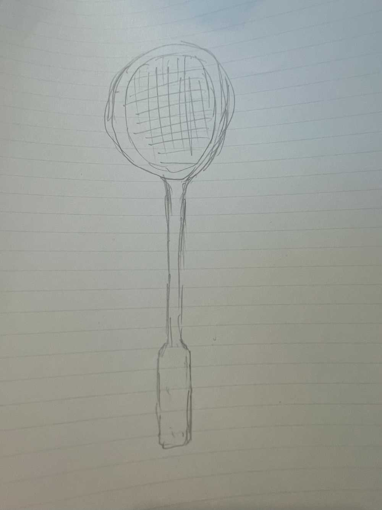
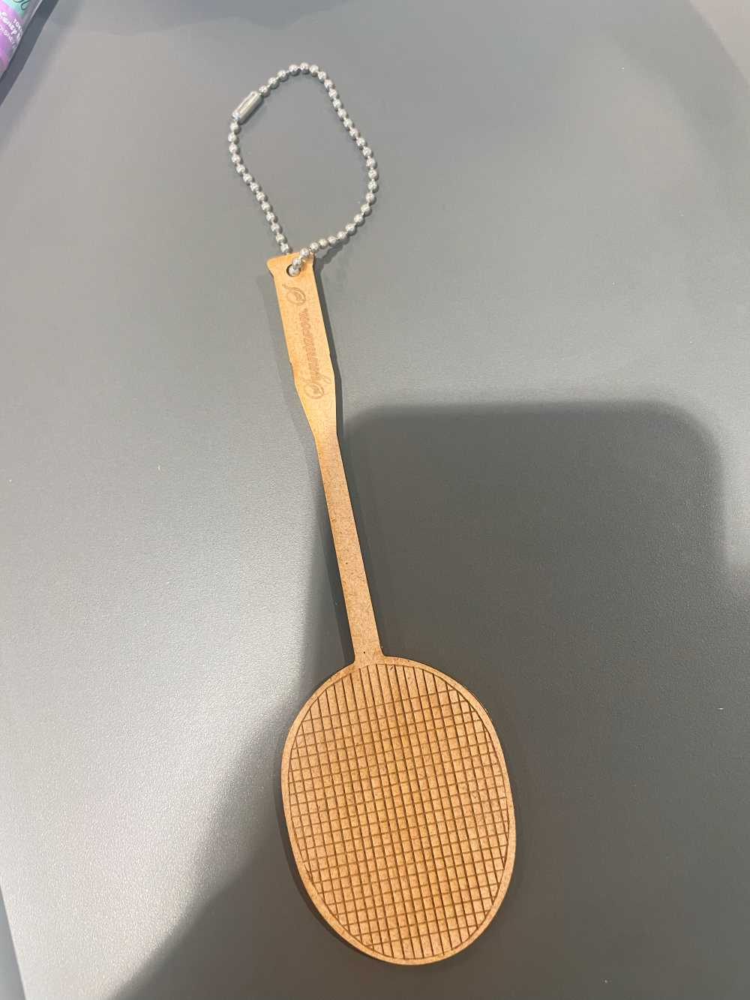
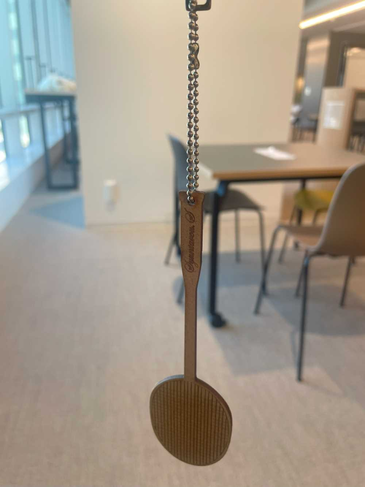
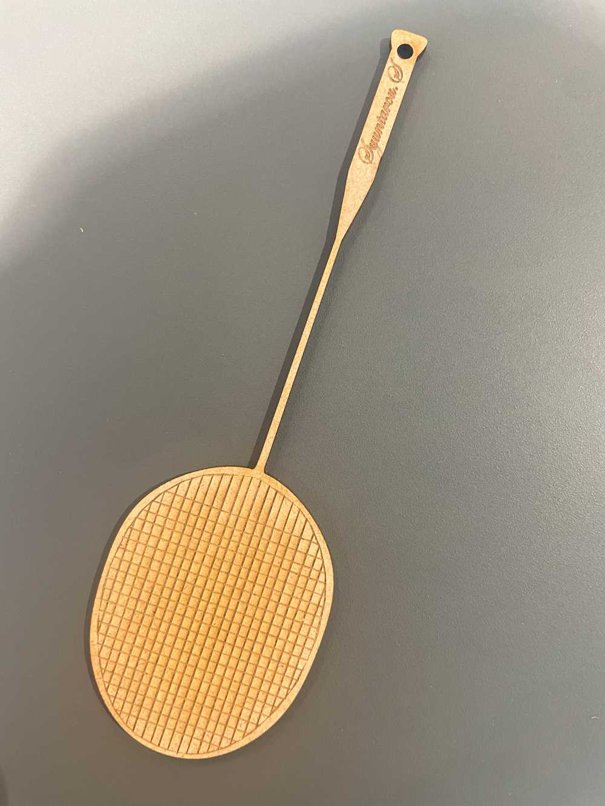

1.ラケットストラップ
2. 手書きスケッチ

3. 作品

4. 設計ファイル
こちらから見れます
5. 作品の説明
人の心を動かすものを作るということで、今回は友人へのプレゼントを作ろうと考えました。
友人は大学でバドミントン部に所属しているので、ラケット型のストラップにしました。
6. 制作プロセスの中で調べたことのメモや画像
特に調べることはなくスケッチまではできました。
FUSION360のファイルをDXFに変換したり、Illustratorの使い方など分からないことは、ファブラボの方に教えてもらいました。

レーザーカット1回目ではシャフトの部分が細く、強度に欠けていたので、Illustratorで太く描きかえてもう一度作り直しました。